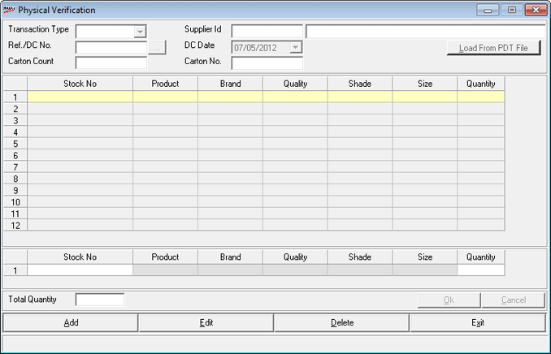

This option allows the recording of the physical count of goods received prior to updating the stocks and accounting the receipt. This option allows the creation of physical verification data of goods received.
Note: This option does not increase the stock and the data created through this option is to be loaded using the Goods Inward form.
Physical verification is optional for an installation but can be configured to be mandatory for all inwards by setting the system parameter Goods Inwards Physical Verification Applicable to ON under the category Inwards.
The physical verification process finds its use in an environment where items received are either with barcodes or the barcodes are tagged on arrival. This process reduces paper-work and data-entry in the goods inwards function.
How to reach: Stock > Physical Verification
The Physical Verification window is displayed.

Add: Click to record a new batch or to add an entry. Click here for more information.
Note: In case Batch, Grade or Location is enabled then the item details grid and direct entry grid would contain Batch, Grade and Location columns respectively.
Edit: Click to edit the existing batch/ entry. Follow the steps as in add option. Select the Transaction Type, Supplier Id, enter or browse the Ref/DC No, select the DC Date, enter the total Carton Count and the Carton No. The details are displayed appropriately in the grid. Make necessary changes and click Ok.
Delete: Click to remove an entry or an entire batch. Follow the steps as shown in add option. Select the Transaction Type, Supplier Id, enter or browse for the Ref/DC No, select the DC Date, enter the total Carton Count and the Carton No. The details are displayed appropriately in the grid. Click Ok to confirm deletion.
Note: The Edit/ Delete option is not allowed if the goods is already consumed in the Goods Inwards.